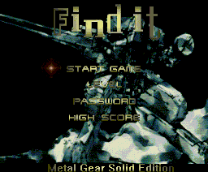
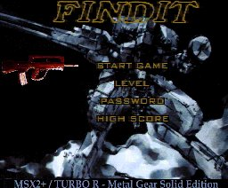

|
First released at the Tilburg 2000 fair, finally a new type of puzzle game
is presented for the MSX2. This puzzle game was made by Delta Soft with music
from Surrec. The full name of the game is a bit of a mouth-full: “Find It -
Metal Gear Solid Edition”. The somewhat original package contains the six game disks, the manual which is in both Dutch and English and an audio-cd. The game can be installed on a harddisk for faster loading and to reduce the disk switching. The audio-cd contains the MoonSound music in the game as the music is MoonSound only.
 |
| Figure 1:
Intro screen on MSX2 |
|
|
|
 |
| Figure 2:
Intro screen in MSX2+ and MSX turbo R version |
|
|
|
Delta Soft currently is working on a patch which enables Find It to use
some specific MSX2+ and MSX turbo R features. These features include mainly some
pictures which are ‘converted’ to the MSX2+ screen mode and some minor bug-fixes. The first patch is already released at deltasoft.msx2.com and includes a new intro screen. The patch is done on the disks, so if you want to make the other version as well, copy the disks and start patching on these copies. In figures 1 and 2 you can see the difference in the intro screens.
The game
When Find It is started for the first time, you need to configure some things
such as controls and language. These are saved on the first disk or on harddisk
and can be changed when you start the game next time.
Then a text is printed providing the means to change these settings.
After the funny scene with the Delta Soft logo the intro screen appears and a demo will start
after a while if nothing is done.
The game itself contains eight levels of four rounds, so there are 32 puzzles.
Every puzzle contains two pictures. One picture is the original and the second
contains some differences. The number of differences depend on the round you
are in. The aim is finding these differences. The faster you do this, the higher
your score. After every round you get a password, which you can enter using the
password selection at the intro screen. After every level you will also get a
small demo starring members of the Metal Gear Solid cast drawn in SD style. These small demos change when playing on another difficulty level — the level selection at the intro screen — to encourage playing on a different difficulty level as well. Find It can be pretty addictive at times, especially when you just cannot find the last difference.
The gameplay could be better. The movement of the cursor is not smooth
and with the TAB-key — used to speed up movement when playing
with cursor keys or joystick, similair to Video Graphics — the cursor jumps
farther when pressed too long. The problem is that it is hard to pinpoint. You
can easily cheat by pressing the pause-key — if your MSX has
one — during the game, but I have noticed in the MSX2+ and MSX turbo R version
this is removed. One minor bug still is that the game simply quits with an error
message when attempting to write to a write-protected disk. In my opinion
original disks should be write protected. Another minor bug is the fact that
there is not enough time to write down the password. I have mailed the
programmer about these bugs and I hope there will be a bugfix for these as well.
The graphics
A puzzle game like Find It highly depends on the graphics. Especially for the
puzzles the graphics should be good. Many of the puzzles have converted
pictures. Because of the — sometimes — poor conversions and the
positions and sizes of the differences the puzzles can be pretty hard to solve.
I am still busy with a puzzle where I just cannot find the last difference
because of this. As said above, you can see the difference between MSX2 and
MSX2+ and MSX turbo R version for the intro screen in figures 1 and 2. From those
screenshots you can draw your own conclusion, I hope.
The music
Find It contains MoonSound music only. Even though I think the music is good — many
tunes are taken from Metal Gear Solid or Solid Snake and they are arranged
pretty well —, there is one disadvantage about it: there will be no music
for MSX Music and/or MSX Audio. Because of this, users without MoonSound can
enjoy the music using the audio-cd, as many people do have a cd-player nowadays.
I hope Delta Soft will continue doing this even when they are going to add music
for MSX Music and/or MSX Audio as well as MoonSound music. As the music is
partly from Metal Gear Solid, it suits the graphics of the game. However, at many times boss-tunes are pretty loud and boring, so here they are too.
Packaging
The disks, audio-cd and manual are packed in a zippable cd-case, which is very
special. As you can see in the photo, these all are labeled in black and white. The original
MERCK disks — I have never heard of them — contain the game files. It
seems that a big part of the price is spent on the packaging.
Hall of fame
Depending on your total score it can be recorded in the hall of fame when you have finished the last puzzle. The hall of fame is saved on the last disk or on hard disk, so make sure to have both disk 1 and 6 write unprotected (see above). Using this hall of fame you can compete with your friends.
Conclusion
Playing the game is a lot of fun, however sometimes pretty difficult because of
the position and sizes of the differences in combination with the sometimes
badly converted graphics. The second puzzle is pretty hard as it is in black and
white and contains much black. Other puzzles have so few colours you think it is
too easy to play, but still it is pretty hard. Delta Soft put a lot of humour in
Find It. The music is good — with the condition that there is no music for
MSX Music and/or MSX Audio — but can be a bit boring sometimes. The puzzle
type is unique for MSX, the small demos are fun and the gameplay is fine. I
myself am waiting for the next MSX2+ and MSX turbo R patch for even more fun. If
you have a MoonSound and like this kind of puzzle games, you should buy it. If
you don’t: the
cd helps a little bit, but playing without the proper music is a little boring.
|